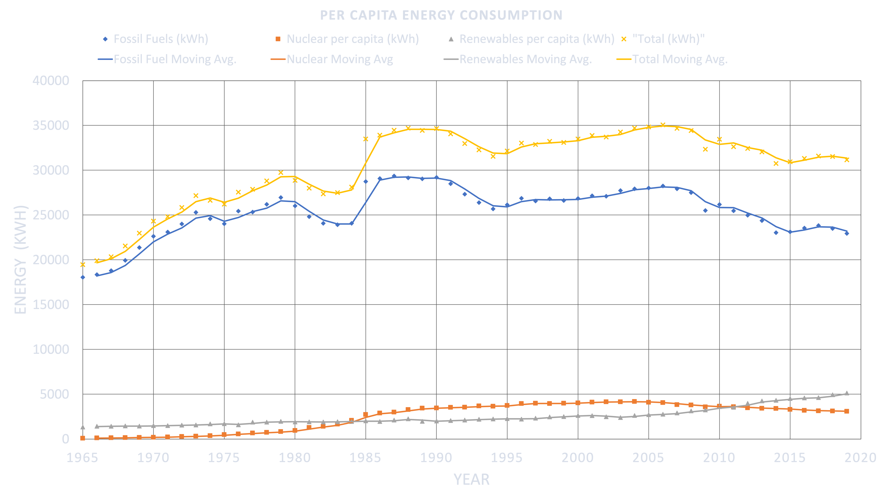

This is a work in progress and will be updated in real-time as the work progresses.
In this article I'm going to discuss the energy transition and my thoughts on the overall atmosphere with a focus on the Euro zone as they have the most concrete and measurable goals in the world at the moment. The accuracy, validity, and practicality of the goals can be questioned but regardless, it is a starting point.
I think it is important to differentiate the viewpoint I will be coming from. I'm not a policy maker, it makes no difference to me how fast this transition happens. I'm approaching this problem from the viewpoint of an analyst who has to work with the information out in the public realm to form a hypothesis of the future.
There were a few options I considered when building a valuation and forecast for the energy transition. The following options were considered:
This method relates to comparing historical major transitions that have occurred in the past and using a similar model to forecast and predict how a current transition will occur. A great example of this case is how the transition from radio to television and from black and white television to color was used to predict the transition for Netflix regarding video-streaming by some analysts. In regards to the right transition that we can use on for net-zero is difficult, in many countries certain transitions occurred because of necessity and convenience in contrast to what would have been "ideal." Not to mention how some countries have never had a transition occur at all in their history and are for instance still burning wood or coal to sustain life.
If I had a gun to my head I would take a look at the largest transitions that occurred for the majority of nations and pick one that had the largest factors in common with the transition for clean energy. A place I would start would be the oil/natural gas transition, and perhaps the coal transition from the industrial revolution (although getting accurate and useful data may prove difficult for this one). This was among the most significant changes in human civilization going from an organic economy reliant on framing to a an economy we're more familiar with today (Wrigley, 2013). The issue with using the coal transition in the industrial revolution is that during the revolution the energy consumption per capita drastically increased as well. As such, it may not necessarily provide a great one-to-one comparison of mapping an energy transition (Wrigley 2013).
The idea for this method relates to trying to fit a function that accurately tracks energy transition occurring. For instance building a function that tracks the percentage of energy for a country generated by wind energy. In regards to building the function the approach would use derivatives to track the rate of change and from there "caressing" the forecast to fit an ultimate logarithmic adoption (or whatever adoption seems most plausible).
The critical path method is a scheduling algorithm for tracking and managing parts of a project. The method takes into account event dependance, duration, and external restrictions. The idea is that this method can be modified for building almost a what-if map of milestones that will occur during the transition. Events will still have inter-dependance (e.g. you can not build a wind turbine farm without getting prior licenses and land titles), and duration (estimated). This method is the most exhaustive as it requires taking into account the major milestones and understanding the inter-dependence of each event.
I believe that the ideal method will be a mix between comparative analysis and a calculus forecast. As such, the next order of business is picking a historic transition and pulling the relevant data for it. The data I've pulled has been from academic estimates and will provide the backbone for the fitting and forecasting based on current data that will be pulled form the World Bank. The breakdown and forecast will be on a per-country basis and collated to an overall inter-Euro outlook which will allow me to dive in depth and make nuanced changes as required for certain countries which are more poised for a slower or faster transition.
The first order of business is extracting the energy transition for the world which I've pulled and included below.
Source: BP 2021: Statistical Review of World Energy
{kind=link}